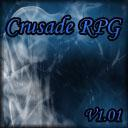
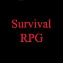

The following are games that you can play in your browser. Note: HTML 5 Supported Browser Is Required Working Title Platform Adventure NYI - More to Come! CIS 383 - Original Midterm CIS 383 - Modified Midterm CIS 383 - Melon JS Tutorial CIS 383 - Final Modification Arrows CIS 383 - Final Modification Story
The following are custom games made within Blizzard's Warcraft III map editor. They will open in a new window. Note: Warcraft III: The Frozen Throne Is Required ST's War TD ST ORPG  Crusade RPG  Survival RPG